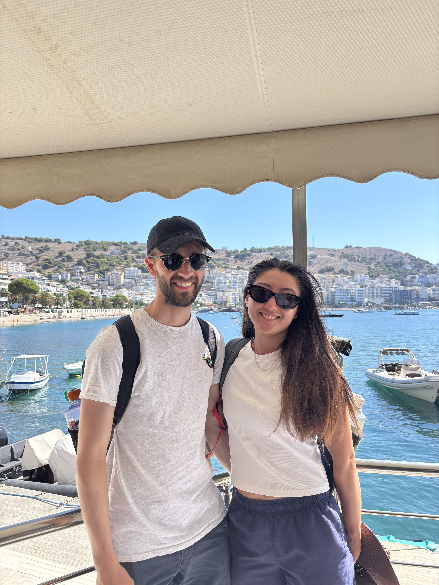
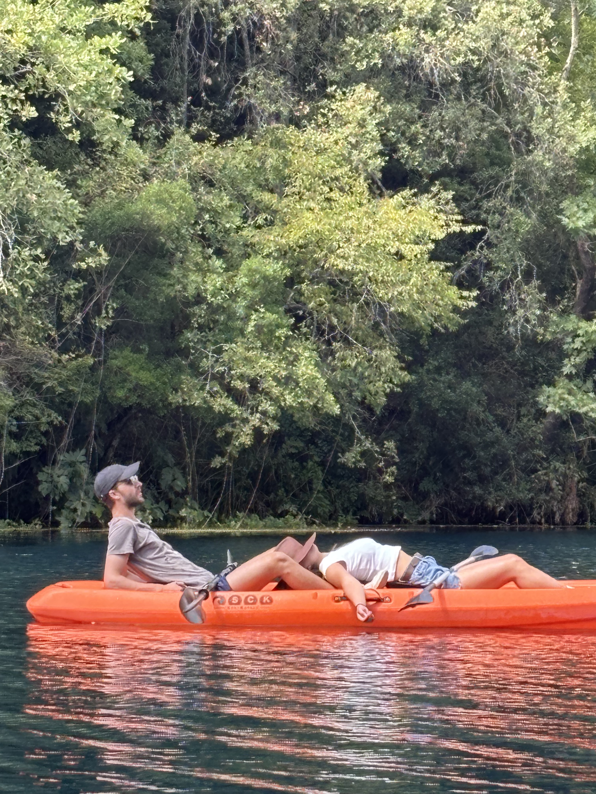
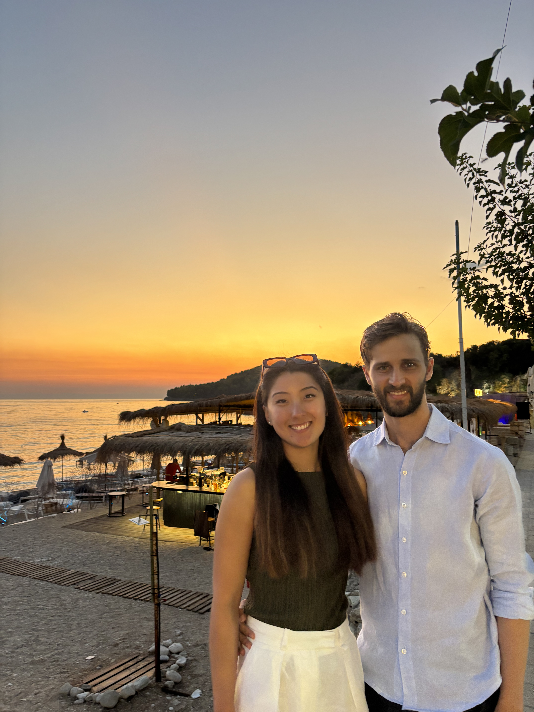
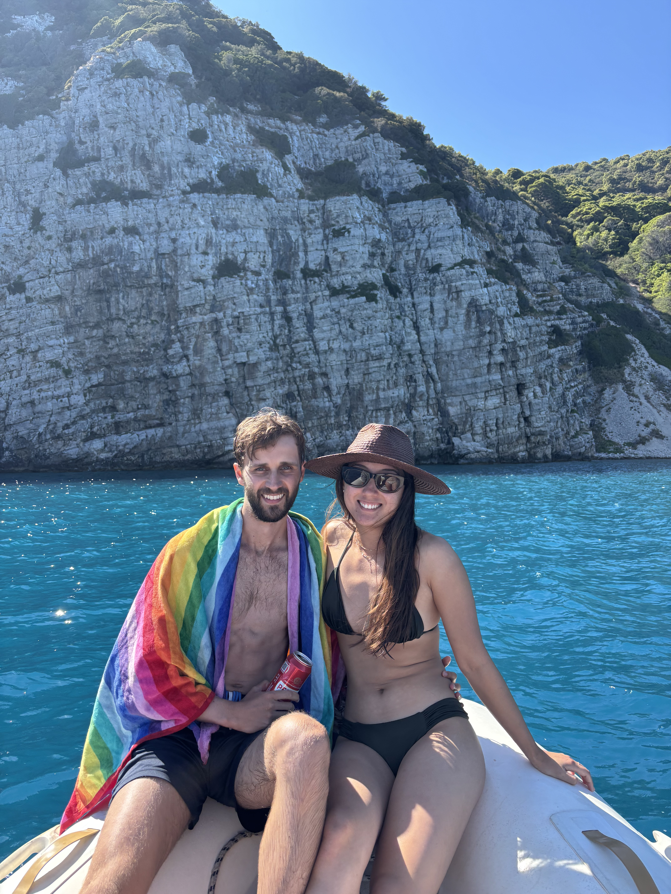
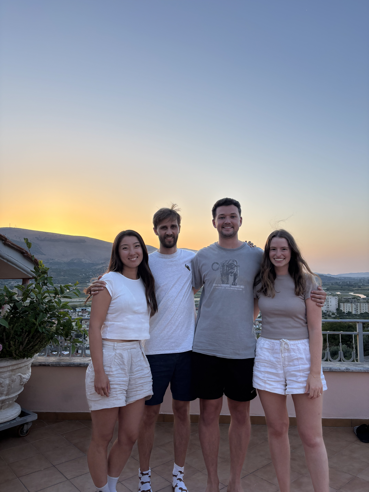
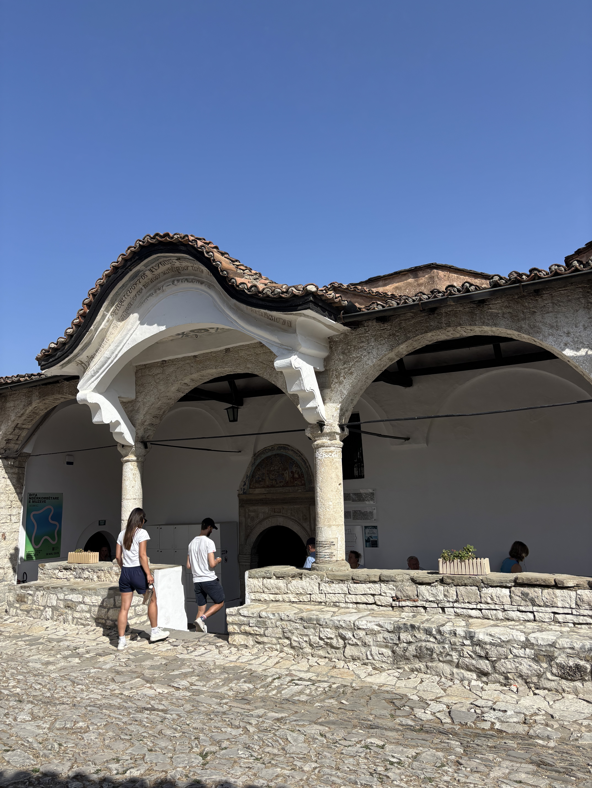

24th August 2025
Hopping of the boat across to Albania we were again greeted with sweltering temperatures. We picked up our rental car and drove through the stacked streets. We stopped off at our flat before heading straight to the beach to cool off. We swam in the slightly cooler water and even had a turn on the aqua park. A quick stop off to take a look at some Albanian books before dinner and hitting the hay!

25th August 2025
In the morning we took a car journey inland towards Blue Eye. Crowds were swarming along the path but we managed to snag two kayaks to paddle along with river towards the Blue Eye. With the added benefit of being close to the cool clear water we made our way closer and eventually reached the 50m spring with unbelievably clear water rising from the deep. On the way back we tried to stop off at Ksamil beach but we were thwarted. A lot of the beach is privatized with only a small area being open to the public. With little space we quickly decided to get out of there and head back to Sarande where we settled in for some dinner and watching some YouTube at the flat.

26th August 2025
We took a quick dip into the ocean in the morning along with waffles and crepes to give us energy for the drive towards Himarë. Narrow windy roads up and down the mountain featured heavily but overall was fun to drive around. We arrived in Himarë and found it to be much more to our liking. Quieter and much less busy we found a nice spot on the beach to spend the rest of the afternoon in and out of the water.

27th August 2025
From Himarë we travelled by car to Vlorë where I had booked us to commandeer a boat for the day. After a very short 2 minute demo of how the boat works, we set off in the open ocean. It was slightly nerve racking with a powerful engine behind us but soon the wind and waves had us forgetting our nerves. We stopped off at Haxi caves where around 10 boats huddled inside a large cutout from the peninsula. The smell of petrol was strong but the cave was very majestic. We powered on to a small island off the coast of Vlorë called Samoi? The waves were getting larger and we were flying around the island when we came across a family stranded in their boat with their engine out of action and no phone reception. We tied their boat to ours and made the painstakingly slow journey back round the island into reception. Once they had safely fixed their engine we parked the boat near a beach on the island. It felt like we were the only ones around with kms of sea between us and the mainland. We drink and ate in the hot sun, dipping into the water to refresh ourselves. I even got to attempt two deep water solo climbs which were awesome even if the rocks were a little sharp. Around 5pm we had to head back from our joyful isolation to return the boat. After a nice dinner in Vlorë we headed back to Himarë under nightfall to catch some sleep.

28th August 2025
Before leaving Himarë, we took one last swim in the beautiful clear water as we knew it would be our last chance. Our journey to Berat was split into two halves, a windy narrow first section where every oncoming car and gutter felt too close, and a motorway for the second section with cars speeding past. We stopped for lunch where Sophie and I indulged in traditional stuffed eggplant, fish soup and byrek. Our place in Berat was a little difficult to find but eventually we travelled down a sharp inclined unsealed road to a beautiful open terraced home where we could sit and admire the sunset. We walked into town for a late dinner before going to bed. Despite being a relatively big town, Berat felt quiet and peaceful, with horses, cats and even tortoises hanging around our home. At night you could even see the stars while there was only the sounds of dogs barking in the night.

29th August 2025
We woke up in Berat and started packing to head to Tirana. Once the car had been packed we walked up the hill to the castle overlooking Berat. It was a hot day with steep inclines which weren’t helped by slippery rock along the path. We made it to the inner part of the castle which was inhabited by lots of local markets. We navigated to the museum housing original artwork from the castle church. Most were painted on wood with similar motifs of St Mary and Jesus throughout. We moved on to the castle walls to see the view of the town and particularly the houses with a thousand windows. After we set off in the car towards Tirana and after a few hours we were into the city and met with a barricade of cars. We stopped for lunch and climbed the Tirana pyramids to get a better view of the city. Surrounded by mountains with several high risers and a beautiful mosque filled the skyline from the top of the pyramid. By this time we were exhausted and went directly to the airport where I dropped off the car in a gridlocked parking area. We all had an early night to get the best of our early flights the next day.